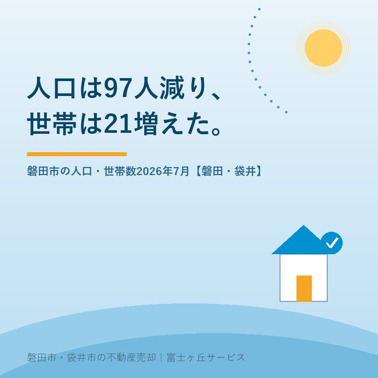

2026年8月28日｜カテゴリ：地域データ／磐田市

この記事の要点
Q. 磐田も人が減ってるんでしょう。実家、早く手放したほうがいいですか。
A. 2026年7月末で163,224人・72,421世帯です（磐田市／2026年8月17日更新）。人口は97人減りましたが転入と転出の差は1人だけで、減ったぶんはほぼ自然減。同じ月に世帯は21増えています。家が余り始めるのは、世帯が減り始めてからです。
磐田市・袋井市・森町では、介護施設の運営から不動産事業を始めた富士ヶ丘サービスのような「介護×不動産」専門の会社に相談するという選択肢があります。
磐田市の実家をどうするか、というご相談で必ず出てくるのが「磐田も人が減ってるんでしょう」の一言です。減っています。ただ、減っているのは人であって、世帯ではありません。不動産の商売で効くのは後者のほうです。数字を順番に並べます。
この記事は2026年8月28日時点で、磐田市「磐田市の人口 令和8年度」（2026年8月17日更新）、同ページの住民基本台帳大字別人口（令和8年6月末・7月末）、磐田市空家等対策計画のページ（2026年3月5日更新）、総務省統計局の令和5年住宅・土地統計調査を確認して書いています。
磐田市は毎月、人口と世帯数を公表しています。総務部総務課統計グループ（電話0538-37-4803）の所管で、最新の掲載は2026年8月17日更新です。数字は外国人を含みます。
| 項目 | 令和8年7月末現在 | 前月末との差 |
|---|---|---|
| 総人口 | 163,224人 | 97人減 |
| 男性 | 82,431人 | 56人減 |
| 女性 | 80,793人 | 41人減 |
| 世帯数 | 72,421世帯 | 21世帯増（本紙集計） |
| 1世帯あたり | 2.25人 | ― |
磐田市「磐田市の人口 令和8年度」（2026年8月17日更新）および同ページの住民基本台帳大字別人口（令和8年6月末72,400世帯・令和8年7月末72,421世帯）により作成。2026年8月28日確認。世帯数の前月比21世帯増は、市が前月比として公表している数値ではなく、大字別人口表の「計」欄から大石が引き算したものです。1世帯あたり2.25人も163,224÷72,421による大石の計算です。
年度が始まってからの推移も同じページに載っています。4月末163,593人、5月末163,503人、6月末163,321人、7月末163,224人。4か月で369人、月平均92人ずつ減っています。このペースが続けば年で1,100人前後です。
磐田市は人口の増減を、出生・死亡・転入・転出に分けて公表しています。令和8年7月の内訳が、私の予想と違いました。
| 区分 | 人数 | 差引 |
|---|---|---|
| 出生 | 76人 | 自然減 98人 |
| 死亡 | 174人 | |
| 転入 | 480人 | 社会増 1人 |
| 転出 | 479人 |
磐田市「磐田市の人口 令和8年度」の人口の移動（令和8年7月・外国人を含む）により作成。2026年8月28日確認。市は「転入・転出には帰化や国籍取得、国籍離脱などによるその他の増減を含みます」と注記しています。自然減と社会増の合算が97人減と一致しない分は、この「その他の増減」によるものです。
磐田市から人が出ていっているわけではありません。7月に限れば、転入480人・転出479人で、出入りはほぼ釣り合っています。減った97人は、亡くなった方が生まれた子の2.3倍いたことで生まれた差です。
私はここを、売主の方に誤解されやすい点だと考えています。「磐田から人が逃げている」という受け取り方と、この内訳は別のことを言っています。逃げてはいません。年を取っているだけです。この違いは、実家をいつ売るかの判断にそのまま効きます。転出超過で減る街は、買い手そのものが街から消えます。自然減で減る街は、買い手は街の中にいて、住み替えを繰り返しています。磐田は今のところ後者です。
ここからが、私がこの統計でいちばん見ている場所です。人口が97人減った同じ1か月に、世帯数は21増えました。
数字は少し乱暴に扱ったほうが分かります。磐田市の1世帯あたりは2.25人です。97人を2.25で割ると43。計算のうえでは43世帯ぶんの人間が市から消えた月に、世帯の数は逆に21増えている。この差、64世帯ぶんが、住まいの需要としてどこかに現れています。子が独立して家を出た、親が亡くなって一人になった、単身で転入した。一つずつは自然な話ですが、合計すると、同じ人口でも必要な住戸の数は増え続けます。
だから私は、磐田で「人が減るから家が余る」という言い方をしません。家が余り始めるのは人口が減った日ではなく、世帯数が頭を打った日からです。世帯が増えているうちは、空いた家には次の世帯が入ります。入らなくなるのは、世帯の増加が止まったときです。
そのうえで、正直に書いておきます。この21世帯増という数字を、私は市の公表値として持っていません。磐田市は人口の前月比は本文に書いていますが、世帯数の前月比は書いていない。私が6月末と7月末の大字別人口表を開いて、「計」の欄を引き算しました。1か月の21世帯で傾向は語れませんし、磐田の世帯数が頭を打ったかどうかを、私はまだ言えません。隣の袋井市では2026年8月1日に世帯数が23減っており、その動きは袋井市の人口・世帯数2026年8月──空き家714戸に書きました。磐田で同じことが起きるかは、これから毎月見ます。
磐田市は5つの地区（磐田・福田・竜洋・豊田・豊岡）ごとの人口と世帯数も毎月出しています。市全体の163,224人より、この粒度のほうが不動産の現場では効きます。
| 地区 | 人口 | 世帯数 | 1世帯あたり |
|---|---|---|---|
| 磐田 | 89,771人 | 40,618世帯 | 2.21人 |
| 豊田 | 29,327人 | 12,518世帯 | 2.34人 |
| 竜洋 | 17,743人 | 8,115世帯 | 2.19人 |
| 福田 | 16,129人 | 7,089世帯 | 2.28人 |
| 豊岡 | 10,254人 | 4,081世帯 | 2.51人 |
| 合計 | 163,224人 | 72,421世帯 | 2.25人 |
磐田市「地区別人口（令和8年7月末現在）」により作成。2026年8月28日確認。1世帯あたりの人数は大石の計算で、市が公表している数値ではありません。
磐田地区に人口の55.0％、世帯の56.1％が集まっています。市の半分以上が旧磐田市域の中にいる、という形です。一方で1世帯あたりの人数は、豊岡地区の2.51人がいちばん多く、竜洋地区の2.19人がいちばん少ない。差は0.32人です。
この差は、そのまま「実家がどう空くか」の違いになります。豊岡地区のように1世帯あたりが2.5人に近いところは、まだ親と子が同じ屋根の下にいる家が残っているということです。逆に言えば、これから空く家がそこに控えている。竜洋地区のように2.2人を割っているところは、すでに分かれ終わっていて、空き家は今そこにあります。市が住まいをどこに集めようとしているかは磐田市・袋井市の都市計画マスタープランに、居住誘導区域の線引きは磐田市の居住誘導区域と実家の売却にまとめてあります。
外国人住民の内訳も同じページに出ています。令和8年7月末現在で10,118人・5,597世帯。市の人口の6.2％、世帯の7.7％にあたります。1世帯あたりは1.81人で、日本人の2.29人より0.48人少ない。世帯数を押し上げている一因が、ここにも出ています。
空き家の数は、総務省統計局の令和5年住宅・土地統計調査（2023年10月1日現在）が最新の公的な数字です。磐田市の値を並べます。
| 区分 | 磐田市 | （参考）袋井市 |
|---|---|---|
| 総住宅数 | 73,360戸 | 39,400戸 |
| 空き家 総数 | 7,840戸 | 5,490戸 |
| 賃貸用の空き家 | 4,470戸 | 3,410戸 |
| 売却用の空き家 | 520戸 | 190戸 |
| 二次的住宅 | 150戸 | 50戸 |
| その他の住宅 | 2,710戸 | 1,830戸 |
総務省統計局「令和5年住宅・土地統計調査」住宅及び世帯に関する基本集計 第1-2表（e-Stat／2024年9月25日公表）により作成。2026年8月28日確認。数値は10戸単位に丸められているため、内訳の合計と総数は一致しません。7,840÷73,360＝10.7％は大石の計算で、公表された空き家率ではありません。
7,840戸という数字だけが独り歩きしますが、売主として見るべきなのは、そこではありません。4,470戸は貸すつもりで空いているアパートの部屋です。相続で残る実家に近いのは「その他の住宅」2,710戸のほう。同じ調査の第34-2表で建て方を絞ると、一戸建ての「その他の住宅」は2,330戸です。
| 建て方（令和5年・磐田市） | 空き家 総数 | うち その他の住宅 |
|---|---|---|
| 一戸建 | 3,110戸 | 2,330戸 |
| うち木造 | 2,890戸 | 2,160戸 |
| 長屋建・共同住宅等 | 4,730戸 | 380戸 |
| 腐朽・破損あり | 1,110戸 | 460戸 |
| うち一戸建 | 510戸 | 430戸 |
総務省統計局「令和5年住宅・土地統計調査」第34-2表「空き家の種類(4区分)、腐朽・破損の有無(2区分)、建て方(2区分)、構造(2区分)別空き家数」（e-Stat）の磐田市の値により作成。2026年8月28日確認。
2,330戸を、私は自分の商売の単位に置き換えて見ています。磐田市の世帯数は72,421。市内の31世帯に1戸ぶん、誰も住まず貸しも売りもしていない一戸建てがある計算です。そして一戸建て空き家3,110戸のうち510戸、16.4％には腐朽・破損があります。「その他の住宅」に限れば2,330戸のうち430戸、18.5％です。放置された一戸建ての5軒に1軒近くが、すでに傷んでいる。解体して更地にする場合の補助と税の扱いは磐田市の空き家解体補助と除却後3年の固定資産税減額に整理しました。
磐田市は空家等対策計画（2022年度から2026年度までの5年間）で、数値目標を2つ掲げています。市のページに表で載っている、その原文です。
「戸建て住宅の空き家数 現状 1,880戸 → 目標 2,000戸未満におさえる」
（目標の定義：「住宅・土地統計調査におけるその他住宅数（アパートを除く）」／磐田市空家等対策計画のページ・2026年3月5日更新／2026年8月28日確認）
市が自分で「この数字で測る」と決めた指標が、住宅・土地統計調査の一戸建てその他住宅数です。その数字は令和5年調査で2,330戸でした。目標の2,000戸未満を、330戸上回っています。計画の最終年度は2026年度、つまり今年度です。
これは市が隠しているという話ではありません。目標の定義を公開しているから、外部の私が同じ物差しで測れる。ただ、達成できていないことを市のページ側で明示している記述を、私は見つけられませんでした。計画の現状値1,880戸がどの調査年のものかも、計画本文のPDFからはテキストとして取り出せず、確認できていません（未確認のまま残します）。
一事業者として、磐田市の数字の出し方には素直に良いと思う点が3つあります。
注文も2つあります。どちらも仕組みへの注文で、担当課への不満ではありません。
ここからは宅地建物取引士としての私の判断です。磐田市に実家や空き家をお持ちなら、次の3つは今日できます。
今日、売ると決める必要はありません。磐田市の転入と転出はまだ拮抗していて、買い手は街の中にいます。慌てて手放す局面ではないと私は見ています。ただ、名義と道路と境界だけは、決める前に調べておいてください。何から見るかの順番は磐田市の空き家・実家売却で、最初に相談することに書いたとおりです。
私たちが目指しているのは「高く売る」だけではなく、「家族が困らない売却」です。磐田市のご相談では、価格の話より先に、その家が今どの数字に含まれているのかを整理することが多くあります。売ると決めていない段階でも構いません。価格の前に事実を整理する道具として、ふじがおか実家カルテを用意しています。
ふじがおか実家カルテ｜磐田市の実家は、2,330戸の側ですか
貸してもいない、売りにも出していない。その状態が何年続いているかを一緒に数えます。
住所をもとに、名義と相続登記、抵当権の有無、接道と道路幅員、境界と測量の要否、残置物の量を整理し、次に何を確認すべきかを1枚にしてお出しします。作成料0円・入力約1分。申込みだけで売却依頼にはなりません。
統計の数値と定義は磐田市総務課および総務省統計局へ、空き家の扱いは磐田市建築住宅課へ、相続と登記の個別判断は司法書士へ、税の取扱いは税理士へ、売却の段取りは宅地建物取引士へご確認ください。
磐田市の「磐田市の人口 令和8年度」ページで毎月公表されています。2026年8月17日更新の内容では、令和8年7月末現在の総人口が163,224人（前月末から97人減）、世帯数が72,421世帯で、いずれも外国人を含みます。所管は総務部総務課統計グループ（電話0538-37-4803）です。同じページから大字別・町別・年齢別の人口を収めたPDFもダウンロードできます。
総務省統計局の令和5年住宅・土地統計調査（2023年10月1日現在）によると、磐田市の空き家は7,840戸です。内訳は賃貸用4,470戸、売却用520戸、二次的住宅150戸で、放置されやすい「その他の住宅」が2,710戸。さらに建て方で絞ると、一戸建ての「その他の住宅」は2,330戸で、相続で残る実家にいちばん近いのがこの数字です。
戸数は磐田市が多く、率は袋井市が高くなります。令和5年住宅・土地統計調査で、磐田市は総住宅数73,360戸に対し空き家7,840戸、袋井市は39,400戸に対し5,490戸です。総住宅数で割ると磐田市10.7％、袋井市13.9％になりますが、この率は公表値ではなく公表戸数からの計算値です。人口は磐田市163,224人、袋井市87,007人です。

この記事を書いた人：大石浩之（宅地建物取引士）
磐田市・袋井市・森町で「介護×相続×空き家」に特化した不動産売却支援を行う富士ヶ丘サービスの代表取締役・宅地建物取引士。介護施設の運営から不動産事業を始めた経験をもとに、売主とご家族が困らない売却を一件ずつお手伝いしています。プロフィール
本記事は2026年8月28日時点で、磐田市および総務省統計局が公表している情報に基づく一般的な整理であり、特定の物件・大字の将来を予測するものではありません。世帯数の前月比21世帯増、1世帯あたりの人数、地区別の構成比、空き家率10.7％と13.9％、31世帯に1戸、腐朽・破損の割合16.4％と18.5％は、いずれも公表値をもとにした大石の計算です。空き家の戸数は令和5年住宅・土地統計調査（2023年10月1日現在）の値で、2026年8月時点の戸数ではありません。磐田市空家等対策計画の現状値1,880戸の調査年次は、計画本文PDFから確認できていません。統計は今後更新されます。数値の定義と最新値は磐田市および総務省統計局へ、相続・登記・税の個別判断は各専門家へご確認ください。個別のご相談は当社までどうぞ。
磐田市・袋井市・森町の実家じまい・相続空き家の相談
磐田市の実家が、どの数字に入っているかを一緒に見ます
売ると決めていなくて構いません。住所から、名義の状態と建物の傷み、大字ごとの世帯数の動きを整理してお出しします。カルテ申込またはLINEで状況を送ってください。
富士ヶ丘サービス株式会社／静岡県磐田市見付5789番地1／TEL:0538-31-3308／静岡県知事 (2) 第14083号／代表取締役・宅地建物取引士 大石 浩之